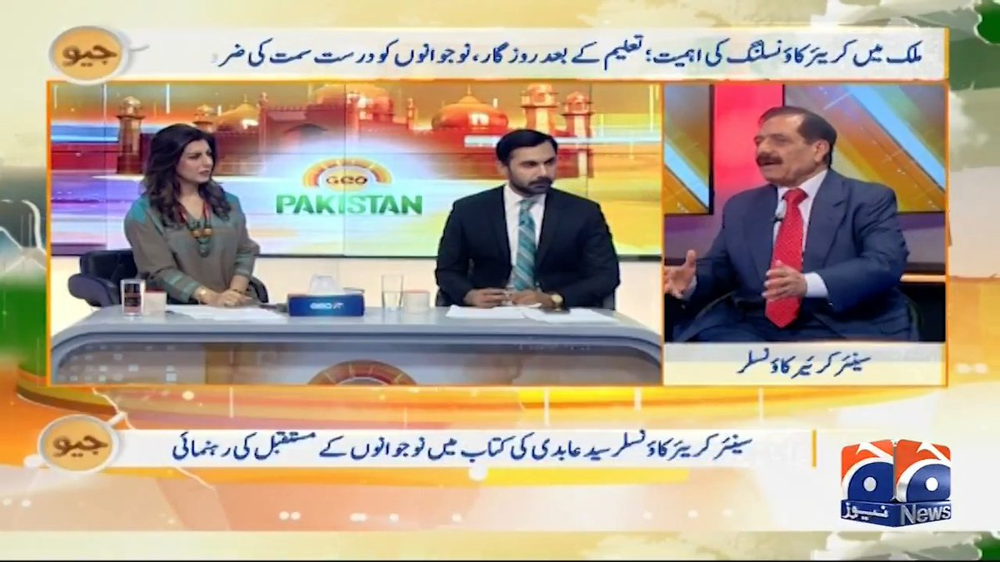
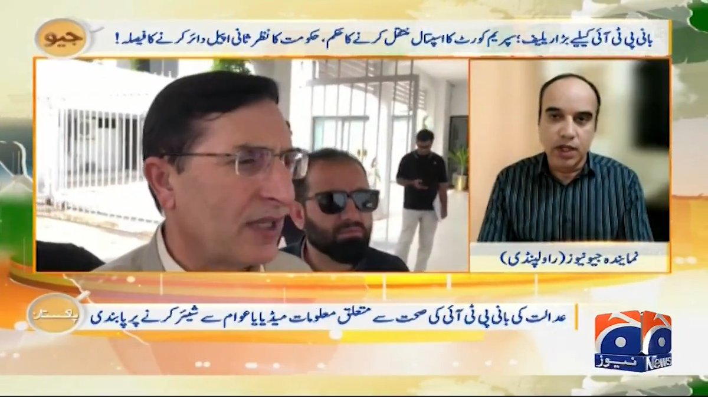
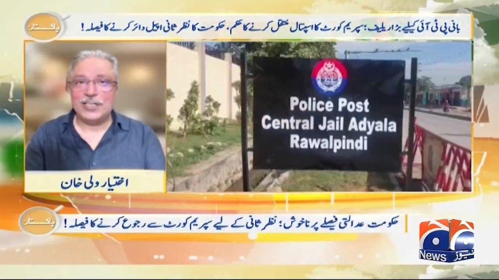
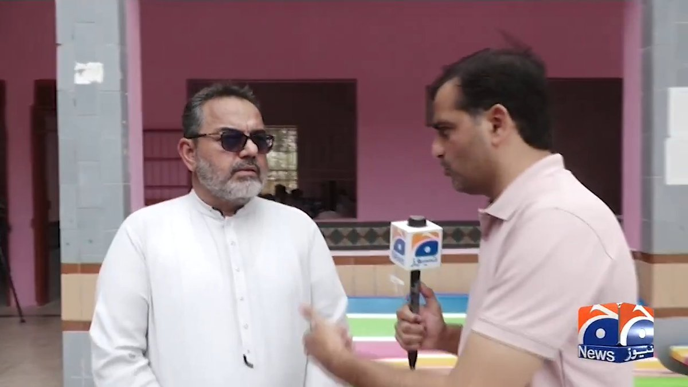

@geonews_urdu
📝 原文: امریکا کو حملوں کیلئے سرزمین دینے والے ممالک کو بھاری قیمت چکانا پڑے گی: ایرانی آرمی چیف
🇨🇳 译文: 伊朗陆军参谋长：向美国提供土地发动袭击的国家将付出沉重代价

🕒 2026-08-19T07:41:18+00:00
| 来源 | 旧窗口内数量 | 本次新增 | 本次淘汰 | 当前窗口内共有 |
|---|---|---|---|---|
| 推文 + Dawn 新闻 | 0 | 46 | 0 | 46 |
| ARY News | 0 | 0 | 0 | 0 |
注：淘汰数 = 旧窗口内数量 + 本次新增 - 当前窗口内共有












暂无文章。